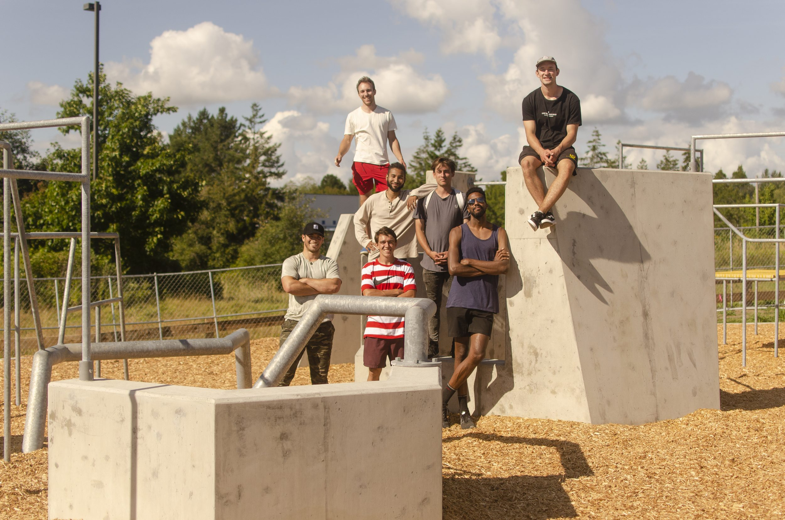
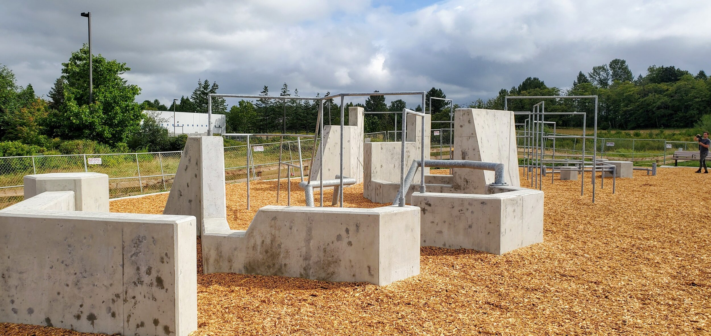

Until the Budget Moved
Bellingham opened a parkour course in September 2020 — the first outdoor one in Washington state. It didn’t happen because a budget line appeared. It happened because a local parkour community spent years building the case — classes, afterschool programs, athletes, teachers — and then two of them sat in the meetings until the budget and the space allocation carried it.

Before this studio built worlds for Walmart or the United Nations, its founder’s first public work was an argument with a city — the polite, persistent kind, made in person, in the meetings where the greater Cordata parks plan took shape, about whether a park should contain something new. Cordata Park’s parkour course is the receipt.
Two people kept showing up
Michael Blackstone and his friend Sidney Mohorovich were parkour people in a city with nowhere to practice. That meant rooftops, handrails, private property, and the constant low-grade negotiation with security guards that every practitioner of a street sport knows by heart. Cities build skateparks and basketball courts because those sports asked for decades. Parkour, in Bellingham in the 2010s, had asked never.
So they asked — and then they sat in. Not a petition with ten thousand signatures: the two of them, in the room, for the meetings where the greater Cordata parks plan moved through its stages — budget hearings, space allocations, the slow civic machinery that decides what a park will contain. They were the only ones in those rooms asking for parkour, and they kept being there until the plan carried it. “We were the only ones who asked,” is how Michael puts it, without drama, as if that were the smallest possible description of the work. It is actually the whole description. The course exists because the asking didn’t stop — and because the asking happened in the room, not just in an inbox.
The city’s relationship with this sport used to be a suspension slip. Michael got suspended from middle school for jumping the rails on the walk to Fairhaven — the behavior that eventually got a park was, for years, the behavior that got you sent to the office. Somewhere between those two facts, the whole stance on risk flipped: what schools used to treat as a problem to punish, they now name as something worth designing for. The city went from get out of here to: come here — we want to find a safe space for you to do this.
The groundwork came first
The meetings worked because they weren’t starting from zero. Bellingham’s parkour scene was already real by then — a hotbed of athletes and teachers, with classes running since 2013 that had grown into afterschool programs in schools across the district. Local kids were meeting the sport in gymnasiums before anyone asked the city for so much as a wall. When Michael first contacted the parks department around 2016, he wasn’t speaking for two people; he was the visible edge of a community that already existed, already taught, already had kids in it. And when the greater Cordata plan opened a window, that community rallied around getting the course built — more friends, more voices, people who knew how to build. The meetings were the last mile of a much longer road.
The connector
Showing up matters more when someone on the other side of the table picks up what you’re carrying. April Barker, then a Bellingham city council member, was that person — a major connector who advocated for the course along the way, helping it survive the stages where a small ask usually dies: the committee reviews, the budget drafts, the space allocation. A plan gets a budget line because someone inside the process decides to walk it through. Barker did that, and the course is part of the result.
What the city built

The course lives inside Cordata Community Park, a larger city project in north Bellingham designed by landscape architects Robert W. Droll III & Associates. The city bought the land in 2015 for $3.6 million, opened Phase 1 in June 2019, and by opening weekend the project had taken roughly $10.5 million overall. The park runs south to north from a rolling wetland — trails and bridges, ponds, birdsong — into an active recreation zone where the parkour course sits alongside a playground, a pump track, and outdoor fitness equipment. On September 4, 2020, Labor Day weekend, the gates opened, and the city’s own parks guide described what nobody else in the state had: an outdoor parkour course.
The course is free to access, sits on a bus line, and is open to all ages — which was the point, not a footnote. The opening-season conversation keeps returning to mixing: the image Michael kept coming back to was a kid going from the jungle gym, sneaking over to see what the bigger kids were doing; seniors wandering over from the fitness equipment with questions. Anyone who has watched a playground knows the tell — cities install plastic equipment, and kids go straight to the rock and the stump. Cordata’s course is a whole park of rocks and stumps.
Michael filmed it that first season and posted the video with a title that needed no editing: “Washington state’s first parkour park!”
Designed for your own path
The course itself came out of Parkour Visions, the Seattle nonprofit, with design director Colin MacDonald shaping it around a philosophy worth quoting at length. Progression first: “If you see a big jump up high, look around and there’s probably a similar jump a bit shorter and closer to the ground.” And density over obstacle-course linearity: “The whole point of parkour is coming up with your own paths and challenges, and that makes parkour tricky to design for. Dense structures give people lots of opportunities to be creative, but too much density gets in the way.” The goal is a place where “people of different ages and abilities can meet up and train together” — parkour is intimidating to start, and the design lowers that door.
Read that again with studio eyes. Progression ladders so a newcomer and a veteran share the same structures. Density tuned so the space invites authored paths instead of a single A-to-B. A room — an outdoor room — that meets people at their own level and lets them write their own route through it. This is, almost word for word, how we think about spatial design now. The difference is only material: concrete and steel instead of meshes and light. The instinct started in physical space, and it still runs on the same principle — the space responds, the person moves, the path is theirs.
Why it’s in this journal
Because the origin argument of this studio is in it. This journal is a record of making spaces, and this entry is the ground floor of that lineage: a shared space, built with a community, a landmark made of concrete instead of light. Everything we’ve made since — a shoppable game aisle, a General Assembly Hall rebuilt for a planet-sized conference — runs on the same bet: that spaces behave, that people move through them writing their own paths, that a place designed for progression keeps its door open to whoever shows up. Landmarks, physical and digital, come from the same instinct. The first version of the bet was made by two guys who were tired of getting kicked out of parking garages, backed by a community that did years of unseen work first, and it was made in person, meeting after meeting, until the budget answered.
Parks don’t appear because someone wrote a check. They appear because a community does years of unseen work — classes, programs, a name for the thing — and then somebody shows up, and keeps showing up, until the check is written. And then one day there was a ribbon and a video titled with an exclamation point. Do the groundwork. Show up. Stay in the room. Then build. That’s the whole method, and it predates the studio by years.